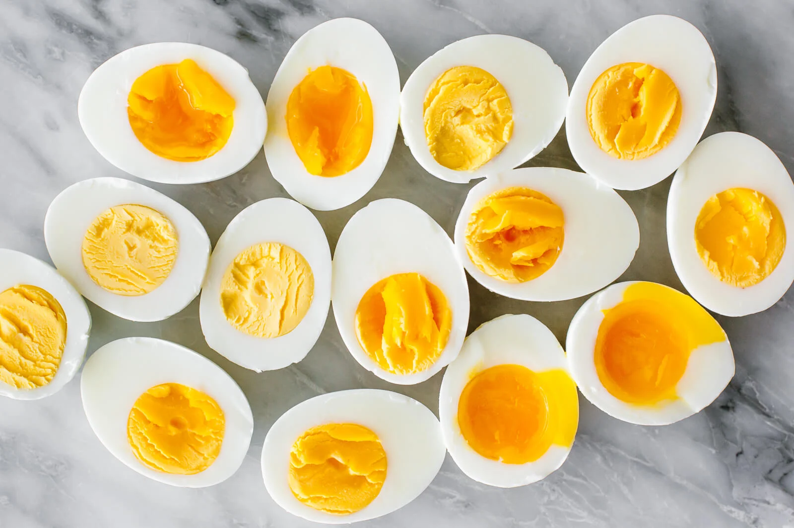

fried eggs
to make fried eggs you will need a:
-
a frying pan
-
a working stove
-
some oil(or butter if you are fancy but i personally hate the smell)
- the egg
- and salt and papper to actually taste the egg
now that we have that we need to:
-
turn on the stove
-
pput the pan on the stove
-
pour oil or put half a block of butter
-
wait a little
-
crack in our egg
-
wait for 5 minutes(i think, thats how mych i wait anyway cuz im scared of food born diseases )
- salt and pepper to taste and serve
i forgot what we were doing sorry here's a picture of an egg

list of recipies
egg
bacon
orange juice
and here is how you make a breakfast! stay safe and dont do drugs
now from the top make it drop